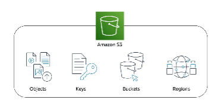
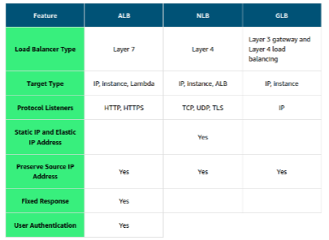

All About AWS
I’ve successfully passed my AWS developer associate exam and these are my notes - everything I’ve learned about AWS.
Compute Services
There are three main compute options:
- Virtual machines
- VM user hypervisor
- Partitions the server resources like RAM and CPU into multiple chunks
- One physical server can turn into multiple servers, each having its dedicated resources
- Hypervisor provides hardware virtualization
- VMs have two OS:
- Host OS - given by cloud provided
- Guest OS - chosen by customer
- Having two OS is a strength and a weakness:
- Two OS consume extra resources
- Alternative to it are containers
- Container service
- Operating system virtualization
- No Guest OS
- Needs fewer resources, uses Host OS
- Customers can run applications independently, but share the same Linux kernel
- Highly portable (can quickly move from one cloud environment to another), highly scalable
- Cons:
- Security concerns (due to same host kernel)
- Dependency on one type of OS provided by the provider
- Serverless
- They solve the problem of the end user that needs to maintain the server part when using VMs or containers
- No need to manage servers
- No cost if the functions are not running
- Cons:
- Lack of standards, which can provide a vendor lock-in for a customer
- Security concerns as apps from different customers run on the same server
Serverless
Lambda
The idea of Lambda is to be able to run code without provisioning or managing servers.
The main components of Lambda are:
- Function
- Resource to invoke to run code in Lambda
- Lambda runs instances of the function to process events
- Trigger
- Describe when a Lambda function should run
- Integrated Lambda function with other AWS services and event source mappings
- Event
- JSON document that contains data for a Lambda function to process
- The runtime converts the event to an object and passes it to the function code
- Application environment
- Secure and isolated runtime environment for the Lambda function
- An application environment manages the processes and resources that are required to run the function
- Deployment package
- Used to deploy Lambda function code
- Two types of deployment packages:
- A .zip file archive
- Function code & its dependencies
- Lambda provides the OS and runtime for the function
- A container image
- Compatible with the Open Container Initiative (OCI) specification
- Add function code & dependencies, OS and Lambda runtime to the image
- A .zip file archive
- Runtime
- Language-specific environment that runs in an application environment
- Lambda function handler
- Method in the function code that processes events
- When the function is invoked, Lambda runs the handler method
- When the handler exists or reuters a response, it becomes available to handle another event
How to optimize memory?
- If it’s CPU, change the memory settings to improve the performance
- Lambda power tuning tool that uses step functions to run multiple concurrent versions of the functions at different memory allocations and measures memory performance
When not to use Lambda function?
- Functions that acts that orchestrators - use step functions instead
- Function that transform data from one service to another without business logic - use service integrations (within services)
- Filtering so to use a smaller subset of events - filter before the function in the service such as S3, SNS etc., EventBridge has content filtering logic which events trigger Lambda function
Fargate
- Purpose-built serverless compute engine for containers
- Allocates the amount of compute on its own
- Abstracts the EC2 instance, so there’s no need to manage the underlying compute infrastructure
- APIs and AWS integrations are still available
- It’s natively integrated with IAM and Amazon Virtual Private Cloud (Amazon VPC)
- Supports your containers completely managed by AWS as a service
- Focus on building applications without managing servers
- Compatible with ECS and EKS
- Fargate vs ECS cs EKS
- ECS and EKS are orchestration services
- Manage where and when your containers run
- Fargate (and EC2) are compute services
- Serverless
- ECS and EKS are orchestration services
Container Services
There are multiple container services. Which one to use depends on specific use cases.
Use cases:
- EKS
- Your workload runs on Kubernetes, but you want a managed K8s service to simplify management
- You need more networking nodes on-demand
- You have the time and expertise to deploy, run and optimize containers on K8s
- ECS
- Most of your workloads run on the AWS ecosystem and you want to run containers at scale
- You need deep integration with AWS services, including code pipeline and ECR
- You have limited time and expertise to learn, migrate and maintain container workload in Kubernetes
- Fargate
- Your existing workload is running on serverless technologies
- Minimal server management strategy is needed
- Using Docker or Kubernetes-based containers is mostly irrelevant
- You don’t have a problem using only one networking mode (VPC)
- Pay only for computing time, not underlying EC2 instances
EKS
EKS allows you to run Kubernetes on AWS without needing to install, operate, and maintain your own Kubernetes control plane or nodes
EKS vs ECS:
- ECS - tye machine, that runs the containers, is an EC2 instance that has an ECS agent installed and it’s named a container instance
- EKS - the machine that runs the containers is called a worker node or Kubernetes node
- ECS container is called a task
- EKS container is called a pod
- ECS runs on AWS native technology
- EKS runs on Kubernetes
Kubernetes objects:
- Cluster
- Set of worker machines (nodes) that rune containerized applications
- Every cluster has at least one worker node
- A cluster has a control place that runs services that manage the cluster
- Node
- A virtual or physical machine that pods are run on
- Each node is managed by the control plane and contains the services necessary to run pods
- Pod
- A group of one or more containers
- Pods are defined by a PodSpec file, a specification for how to run the containers
- Basic building block within Kubernetes for deployment, scaling, and replication
- Volume
- Ephemeral
- Shared volumes to facilitate data sharing in the pod and persistence of data across container restarts
- Persistent
- Backed by storage subsystems independent of cluster nodes
- Ephemeral
- Service
- Logical collection of pods and a means to access them
- Namespace
- Virtual cluster
- ReplicaSet
- Ensures that a specific number of pod replicas are running at any given time
- Deployment
- Owns and manages ReplicaSets or individual pods
- Desired state in the deployment
- ConfigMap
- API object that stored nonconfidental data as key-value pairs used by other Kubernetes objects such as pods
- Secrets
- Confidential data
- Control plane
- Control plane nodes manage the worker nodes and the pods in the cluster
- Components:
- Control plane nodes
- Controller manager
- Runs background threads called controllers that detect and respond to cluster events
- Cloud controller
- Specific controller that interacts with the underlying cloud provider
- Scheduler
- Selects nodes for newly created containers to run on
- API server
- Exposes the Kubernetes API and is the frontend for the Kubernetes control plane
- Hands all communication from the cluster to the control plane
- Designed to scale horizontally, deploying more instances as necessary
- Controller manager
- Etcd
- Core persistence layer for Kubernetes
- Highly available distributed key value store
- Stores critical cluster data and state
- Control plane nodes
- Data plane
- Worker nodes host the pods that are the components of the application workload
- Components:
- Worker nodes
- Kube-proxy
- Maintains network rules on the post and performs any connection forwarding
- Docker
- Container runtime
- Kubelet
- Primary agent that runs on the worker nodes
- Makes sure that the right containers are running in a pod and that they are healthy
- Pod
- Group of one or more containers
- The containers in a pod are always colocated, scheduled together and managed together
- You cannot split containers in a pod across nodes
- Group of one or more containers
- Kube-proxy
- Worker nodes
- Control and data plane communication
- Done through the API server to kubelet
Permissions to configure when deploying a new EKS cluster:
- Cluster IAM role
- Node IAM role
- RBAC user
Three common design metworking patterns:
- Only public subnets
- Three public subnets at most that are deployed into different Availability Zones in the Region
- All worker nodes are assigned public IP addresses and can send and receive internet traffic through an open internet gateway
- Only private subnets
- Thee private subnets at most that are deployed into different Availability Zones in the regions
- All nodes can optionally send and receive internet traffic through a network address translation (NAT) instance or NAT gateway
- Public and private subnets
- This VPC has two public subnets and two private subnets
- One public and one private subnet are deployed to the same availability zone
- The other public and private subnets are deployed to a second available zone in the same region
- Public IP addresses are automatically assigned to resources deployed to one of the public subnets - but not to private ones
- The worker nodes in private subnets can communicate with the cluster and other AWS services
- Pods can communicate outbound to the internet through a NAT gateway that is deployed in each availability zone
- The subnets are tagged so that Kubernetes can deploy load balancers to them
ECS
- End-to-end container orchestration service that helps you spin up new containers
- You can install ECS container agent so to manage containers on a cluster of EC2 instances
- To prepare an application to run on ECS, it’s necessary to create a task definition
- Text file in JSON format
- Blueprint which describes containers
- Highly scalable, high-performance service
- Schedules placement across managed clusters
- Amazon ECR - registry
- ECS supports service discovery
- Blue-green deployments are used for deployment
Components
- Tasks
- Atomic unit of deployment
- Made of one or more tightly coupled containers
- Services
- Abstraction of top of a task
- Task vs service?
- Task is for on-demand workloads, batch jobs or one-time jobs
- Service is for long-running containers
Task definition:
- Resources
- CPU
- memory
- networking
Placement strategies: * Random * Binpack * Least amount CPU or memory * Minimizes the number of instances used * Spread * Places tasks evenly
Which AWS services can you integrate ECS with?
- SQS/SNS for decoupling
- Elastic Load Balancing for load balancing
- Route 53 for DNS
- IAM for authentication and authorization
- AWS Secret manager for securing secrets
- API Gateway for exposing services
- CodePipeline for CI/CD
- CloudWatch for monitoring
Security
- Task definition should have a IAM policy
- IAM policy is related to IAM roles
- Policies should be assigned to role, roles are then assigned to tasks and it’s applicable for all task instances
- Secrets manager
- Each task can have its own IAM role with a policy attached
Storage
Storage types:
- File storage
- Block storage
- Object storage
File storage
- Tree-like hierarchy that consists of folders and subfolders
- Ideal when is required centralized access to files that must be easily shared and managed by multiple host computers
- Typically requires file locking and integration with existing file system communication protocols
Four categories of use cases for file storage:
- Web serving
- Integrated into web applications
- Analytics
- Analytics workloads interact with data through a file interface
- Media and entertainment
- Storage of rich media content
- Home directories
- For users of businesses
Block storage
- Treats files as a singular unit
- Splits files into fixed-size chunks of data called blocks that have their own addresses
- Each block is an individual piece of data storage
- Because blocks are addressable, they can be retrieved efficiently - direct route to access the data
- For example - changing one character in a 1 GB file
- Only one block needs to be changed
- Block storage solutions are therefore fast and use less bandwidth
- For example - changing one character in a 1 GB file
- Preferred storage choice for high-performance enterprise workloads and transactional, mission-critical and I/O intensive applications
- Use cases:
- Transactional workloads
- Storing time-sensitive and mission-critical transactions
- Containers
- Store containerized applications on the cloud
- Virtual machines
- Support hypervisors - users can install the OS, file system and other resources on a block storage volume by formatting the block storage volume and turning it into a VM file system
- Transactional workloads
Object storage
- Files stored as objects
- Stored in a bucket using a flat structure - no folders, directories or hierarchies
- Each object contains a unique identifier and optionally additional metadata
- Changing one character in a 1 GB file
- The entire object must be updated
- No limit to the number of objects stored, meaning it’s scalable
- Useful when storing large or unstructured data sets
- Use cases:
- Data archiving
- Backup and recovery
- Rich media
S3
- Standalone storage solution
- Data can be retrieved from anywhere on the web
- Object storage service
- Flat structure
- File combined with metadata
- Objects are stored in containers called buckets
- Unique identifier: combination of a bucket name, key and version ID
- Each bucket name must be unique across all AWS accounts in all AWS regions within a partition (grouping of Regions)
- If versioning is enabled, S3 automatically generated a unique version ID for the object
Use cases:
- Backup and storage
- Media hosting
- Software delivery
- Data lakes
- Static websites
- Static content
Security principles:
- Everything is private by default, meaning it’s visible only to the user or account that created that resource
- Buckets and objects can be made public
- Three different security policies:
- IAM policies
- Policies which define which IAM users, groups and roles can access and what can they perform
- Two kinds of policies:
- Resource-based
- User-based
- Used for private buckets in two scenarios:
- Many buckets with different permission requirements
- Requirement to have all policies in a centralized location, so all policy information are managed in one location
- S3 bucket policies
- Defined in a JSON format
- Attached to S3 buckets and apply to every object in the bucket
- Specify what actions are allowed or denied on the bucket
- Used for following scenarios:
- Simple way to do cross-account access to Amazon S3 without using IAM roles
- IAM policies bump up against the defined size limit - S3 policies have a larged size limit
- S3 encryption
- S3 reinformes encryption to and from S3
- All objects are automatically encrypted on upload and server-side encryption is applied with S3-managed keys as the base level of encryption
- IAM policies
Server-side encryption in S3
- Header x-amz-server-side-encryption
- When you upload an object, S3 uses the encryption key you provide and removes the encryption key from memory
- Doesn’t store the encryption key
- It’s stored in a randomly salted HMAC value of the key in order to validate future requests
- HMAC cannot be used to derive the value of the encryption key nor to decrypt the contents of the encrypted object - if you lose the encryption key, you lose the object
- Next time request is sent, encryption key is checked - HMAC can’t be used
Encrypt data in S3
- At rest
- Server-side encryption
- amazon S3-Managed keys (SSE-S3)
- AWS KMS-managed keys
- Customer-provided keys
- Client-side encryption
- AWS KMS-managed customer master key
- Client-side master key
- Server-side encryption
- In transit
- SSL
- Client-side encryption

Amazon Elastic File System (EFS)
- Set-and-forget file system that automatically grows and shrinks as files are added and removed
- No need for provisioning or managing storage capacity or performance
- Consistent performance to each compute instance - tens, hundreds, and thousands of compute instances can be connected at the same time
Elastic Block Store (EBS)
- Block-level storage that can be attached to an Amazon EC2 instance - same as an external drive can be attached to a laptop
- Also called EBS volume
- Useful for quick data retrieval and long term data persistence
Characteristics:
- Detachable
- EBS volume can be detached from one EC2 instance and attached to another one in the same Availability Zone
- Distinct
- External drive is separate from the computer
- If an accident occurs and the computer goes down, data is still on the drive
- Size-limited
- Limited to the size of the external drive
- Fixed limit how scalable it can be
- 1-to-1 connection
- Can be connected with one computer at a time
- Cannot be shared or attached to multiple instance
Volumes can be scaled in two ways:
- Increase volume size
- If it doesn’t increase above the maximum size limit
- Maximum volume size at the moment is 64 tebibytes (TIB)
- Attach multiple volumes
- EC2 has a one-to-many relationships with EBS volumes
- One instance can have multiple volumes, but volume can be attached only to one instance at the same time
Use cases:
- Operating systems
- The root device for an instance launched from an AMI
- Databases
- Storage layer for databases running on EC2
- Enterprise applications
- Big data analytics engines size
Volume types:
- SSD
- Transactional workloads with frequent read/write operations with small I/O
- HDD
- Large streaming workloads that need high throughput performance
Key EBS benefits
- High availability
- When a volume is created, it is automatically replicated in its Availability Zone
- Data persistence
- Data encryption
- Supports, when activated by the user
- Flexibility
- Possible to modify volume type, size and input/output operations per second without stopping the instance
- Backups
- Supports to create backups
Snapshots
- Incremental Backups of data from EC2 instances
- Saving only blocks that have changed after the most recent snapshot
FSx
- Fully managed service to launch, run and scale high-performance file systems in the cloud
EC2 Instance Store
- Temporary block-level storage for an instance
- Located on disks that are physically attached to the host computer
- If the instance is deleted, the instance store is deleted as well - ephemeral storage
- Ideal for hosting applications that replicate data to other EC2 instances such as Hadoop clusters
- For cluster-based workloads having the speed of locally attached volumes and the resiliency of replicated data helps to achieve data distribution at high performance
- Also ideal temporary storage of information that changes frequently such as buffers, caches, scratch data etc.
Storage Summary
- EC2 instance store
- Temporary storage of information that is constantly changing
- Not meant for persistent data
- Black storage
- Cannot be detached from EC2
- EBS
- For data that changes frequently and must persist through instance stops, terminations or hardware failures
- SSD or HDD
- Block storage
- Replicated
- Can be attached to a single EC2 instance at a time
- S3
- Data that doesn’t change often
- Scalable solution
- ideal for static web content and media, backups and archiving, and data for analytics
- Object storage
- Replicated across multiple Availability Zones
- Not attached to compute
- EFS
- Elastic, can automatically scale
- Highly available, highly durable
- All files and directories and stored across multiple Availability Zones
- For workloads that require the highest level of durability and availability
- File storage
- FSx
- Native compatibility
Databases
RDS
- Managed database service
- Supports most of the popular RDBMSs such as Oracle, SQL Server, MySql, PostgreSQL, MariaDB, Aurora
- Amazon RDS is built from compute & storage
- Compute - database instance, which runs the DB engine
- Instance can contain multiple databases with the same engine and each database can contain multiple tables
- Underneath the DB instance is an EC2 instance, but it’s managed through the Amazon RDS console (not through Amazon EC2 console)
- Storage
- Elastic black storage volumes for database and log storage
- Compute - database instance, which runs the DB engine
- Applies to MySql, MariaDB, PostgreSQL, Oracle and SQL Server
- Aurora - data is stored in cluster volumes
- Single, virtual volumes that use SSDs
- Cluster volume contains copies of the data across three Availability Zones in a single AWS Region
- For temporary files Aurora uses local storage
- RDS provides three storage types:
- General purpose SSD (gp2 and gp3)
- Cost-effective
- For broad range of workloads running on medium-sized DB instances
- For development and testing instances
- Provisioned IOPS SSD (io1)
- I/O-intensive workloads
- Low I/O latency and consistent I/O throughput
- Best suited for production environments
- Magnetic
- For backwards compatibility only
- Virtual Private Cloud
- When creating an instance, it’s necessary to select the VPC the database will live in and subnets designated for the DB
- The subnets in a DB subnet group should be private, so they don’t have a route to the internet gateway - in that case the data inside the instance can be reached only by the application backend
- When creating an instance, it’s necessary to select the VPC the database will live in and subnets designated for the DB
Data Backup
- Automated backups
- Turned on by default
- Backups the entire DB instance and transaction logs
- Manual snapshots
- Can be initiated at any time
- Exist until they’re manually deleted
Security
- IAM
- IAM policies to assign permissions that determine who can manage RDS resources
- Security groups
- Control which IP addresses or EC2 instances can connect to databases on a DB instance
- Encryption
- SSL or TLS connections with DB instances
DynamoDB
Core components:
- Tables
- Collection of items
- Items
- Collection of attributes
- In a Person table each item represents a person
- In a Cars table each item represents one vehicle
- Items in DynamoDB are similar to rows in relational databases
- Attributes
- Fundamental data element
- For example PersonID, LastName, FirstName etc.
- Columns in relational databases
- Keys:
- Primary
- Uniquely identify each item in a table
- Secondary index
- Provide more querying flexibility
- Primary
Use cases:
- Scalability problems with other traditional database systems
- Mission-critical application that must be highly available at all times without manual intervention
- High level of data durability regardless of the backup-and-restore strategy
Security
- Data is redundantly stored on multiple devices across multiple facilities in a DynamoDB Region
- All user data is fully encrypted at rest
- Uses encryption keys stored in Key Management Service (AWS KMS)
- IAM administrators control who can be authenticated and authorized to use DynamoDB resources by using IAM to manage access permissions and implement security policies
- Protected by the AWS global network security procedures
Keys:
- Primary or partition key: a single attribute
- DynamoDB uses the partition key’s value as input to an internal hash function to determine where to store the item.
- Composite key (partition key + sort key)
- Contains two attributes
- Partition key - descripes which partition to use
- Sort key - store multiple items with the same partition key in a sorted order
- Example - sort by genre and within genre sort alphabetically by title
- Contains two attributes
Cache Strategies
- Write-through cache - adds data or updates data in the cache whenever data is written to the database, the cache is never stale and data is always current
- Write-through cache + TTL - minimizes wasted space by deleting the data that are never read
- Lazy-loading cache - load data into the cache only when necessary
Cache Types:
- Item cache
- Stores results of GetItem and BatchGetItem
- When an item is requested, if it’s present it’s returned, if not then if’s fetched from the DB and cache is updated
- Query cache
- Stores results of Query and Scan operations
- When a Query or Scan are performed, DAX caches the set of results
- Subsequent identical Query or Scan requests can be served directly from the cache
Query vs Scan operation
- Query
- Retrieves data from a table using the table’s primary key or a secondary index - finds items based on the partition key and an optimal sort key
- Used when you know the partition key value and optionally the sort one as well - for example all orders from a specific customer
- Very efficient, because it targets a specific partition or index
- Scan
- Reads every item in the entire table or a secondary index
- Doesn’t require a partition key or a sort key
- Finding all items that match a certain non-key attribute value
- Less efficient, resource-intensive
- Can be improved with parallel scans, but this speeds up the process, but increases the consumption of read capacity
Strong vs eventual consistency
- Strong
- real-time data update
- All copies of the data are updated before the write is considered successful
- Eventual
- Data is later updated
- System acknowledges write before the data is fully replicated
Locking
- Optimistic
- Client-side item is the same as the item in DynamoDB, checks a value open save to ensure that it has not changed
- The Check before you sit approach - when you try to update the item, you check if it has changed since the last time you read it
- Pessimistic
- Not suitable for the multithreaded application, blocks users from reading, updating or deleting an entry
- The reserved table approach - even if you’re just looking at the menu and deciding what to eat, no one can sit at your table
Index
- You cannot add a local index after the table has been created because local index is another way to reorganize the existing partition
- Local secondary index has the same partition key as the base table, but a different sort key - that’s because it’s reorganization of the existing partition
- Global Secondary Index
- Partition key and sort key can be different
- This is because it’s a new way to reorganize data (for example give me all same shapes regardless of their color and size)
- Partition key and sort key can be different
DynamoDB streams
- Streams are kept for 24 hours, can’t be manually deleted nor kept for longer time
- Event types in streams: insert, modify, remove
- Stream view types:
- KEYS_ONLY - only the key attributes of the modified item
- NEW_IMAGE - the entire item as it appears after it was modified
- OLD_IMAGE - the entire item as it appear before it was modified
- NEW_AND_OLD_IMAGES - both the new and the old images of the item
Other Purpose-Build Databases
- ElastiCache
- Fully managed in-memory caching solution
- Support for Redis and Memcached
- MemoryDB for Redis
- Redis-compatible, fully-managed, durable, in-memory database that delivers ultra-fast performance
- Microsecond read latency, single-digit millisecond write latency, high throughput and Multi-AZ durability
- Redis-compatible, fully-managed, durable, in-memory database that delivers ultra-fast performance
- DocumentDB
- Fully managed document database
- Document - you can store and query rich documents
- Has API that’s compatible with MongoDB
- Fully managed document database
- Keyspaces
- Scalable, highly available and managed Apache Cassandra compatible service
- Popular for high-scale applications that need top-tier performance
- Also for high-volume applications with straightforward access patterns
- Neptune
- Fully managed graph database
- Timestream
- Fast, scalable and serverless time series service for IoT and operational applications
- Easy to store and analyze trillions of events per day up to 1000 times faster and for as little as one-tenth of the cost of relational databases
- Quantum Ledger Database (QLDB)
- Ledger database that provides a complete and cryptographically verifiable history of all changes made to the application data
Monitoring
CloudWatch
- Monitoring and observability service that collects resource data and provides insights
- Can do the following:
- Detect anomalous behavior in environments
- Set alarms to alert when something is not right
- Visualiza logs and metrics with the AWS Management Console
- Take automated actions like scaling
- Troubleshoot issues
- Discover insights to keep applications healthy
Load Balancing
Elastic Load Balancing
Distributes incoming application traffic across EC2 instances, containers, IP addresses, and Lambda functions.
Three main components:
- Rules
- To associate a target group to a listener
- Needs source IP address of the client and decides which target group to send the traffic to
- Listeners
- The client connects to it
- A port must be provided
- Target groups
- The backend servers are defined in one or more target groups
- Define type of backend to direct traffic to such as EC2 instances, Lambda functions or IP addresses
- Health check must be defined for each target group
Types of load balancers:
- Application load balancer (ALB)
- Load balancing HTTP and HTTPS traffic
- Network load balancer (NLB)
- Load balancing TCP and UDP traffic
- Gateway load balancer (GLB)
- Helps to deploy, scale and manage third-party appliances such as firewalls, intrusion detection and prevention systems, and deep packet inspection systems

Troubleshooting & Optimization
Hot partition in DynamoDB
- Refactor application to distribute read and write operations as evenly as possible across your table
- Implement error retries and exponential backoff
Important DynamoDB Calculations RCU
- strongly consistent == rps * (item size / 4)
- eventually consistent == rps * (item size / 4) / 2
- Transactional == rps * (item size / 4) * 2 WCU
- standard == wps * (item size / 4)
- transaction == wps * (item size / 4) * 2
Size of indices in DynamoDB
- Global secondary index’ provisioned WCU should be equal or greater than the WCU of the base table
Kinesis data stream
- Capacity of the stream - use more shards in the stream
- Hot shards receiving more data, split them to increase capacity
- Cold shards the opposite, merge them to better utilize the capacity and to reduce cost
What to do when DynamoDB transactions are slow?
- Batch operations What to do when DynamoDB data by one user overwritten by another?
- Implement optimistic locking strategy by designating one property to store the version number in the mapping class for your table
What to use when Last writer wins should be used?
- Use global tables
Lambda
- An increase in memory size triggers an equivalent increase in CPU available to your function
- The concurrent execution limit is enforced against the sum of the concurrent executions of all functions
- The unreserved account concurrency can’t go below 100
Lambda data discrepancies
- Invocations have been running for over 15 minutes and reached the maximum execution time
- Reuse the same connection string - execution context
- Reserved concurrency
- Reserving 20 tables at a 100 tables restaurant
- No matter how busy it is, there will be 20 tables available
- Function will have 20 concurrency executions available and the other functions will share the remaining 80
- It doesn’t speed up the service, but in ensures availability
- Provisioned concurrency
- Having a team of waiters ready and waiting for guests as soon as they arrive, so they get immediate service
- In scenarios where they are sudden spikes in traffic and function needs to respond immediately
- What to use to prevent function from using too much reserve concurrency?
- Reserve concurrency splits the pool of available concurrency into subsets
What if an application uses two identical Lambda functions, but they’re performing differently?
- Track metrics through CloudWatch
- The unit of scale in Lambda is concurrency
- To scale it up, when it doesn’t perform, means to set up higher concurrency limit
What is the same Lambda function that needs to be used for multiple stages in your API, but that function needs to read data from different DynamoDB tables depending on which stage is being called?
- Use stage variables, which are configuration attributes in the deployment file of the REST API
- Integrate Lambda function with API Gateway using a stage variable and also add the proper mapping configuration too
What if you need to process items from a stream or a queue?
- Configure event source mapping, which is a Lambda resource that reads items from an SQS queue, Kinesis Stream or DynamoDB stream and sends items to your function in batches
- Can handle errors and retries
What kind of errors can occur in Lambda?
How many times does Lambda retries?
- Twice
- It’s possible to configure dead letter queue to capture events that weren’t successfully processed, so they don’t end up waiting in the queue for days
- Invocation types
- Sync
- Use the invoke command with the AWS CLI
- Async
- S3 and SNS services invoke functions asynchronously
- You don’t wait for response - Lambda handles everything
- Sync
What service to integrate to help with errors?
- CloudWatch, X-Ray
DevOPS
Other services
Service for:
- Managing containers - elastic container service
- Without infrastructure, but providing provisioning, load balancing, scaling, health monitoring - Elastic Beanstalk
- Serverless applications - AWS SAM
- Cross-device sync - Amazon Cognito Sync
- Device farm is a testing app
- Cross-device sync, but real-time with shared state - AppSync
- Send traces to multiple different tracing backends without having to re-instrument your code - OpenTelemetry & X-Ray
- Hardware security modules for keys that are 3rd party - CloudHSM
- Cypress tests - amplify hosting
- Signup and signin functionality - cognito user pool
- RDS data encryption - Transparent Data Encryption (TDE)
- Real-time data from applications, can be triggered by Lambda - EventBridge
- Coordinate multiple AWS services into serverless workflows - Step functions
- Expressions that enable you to group objects - Clluster Query Language